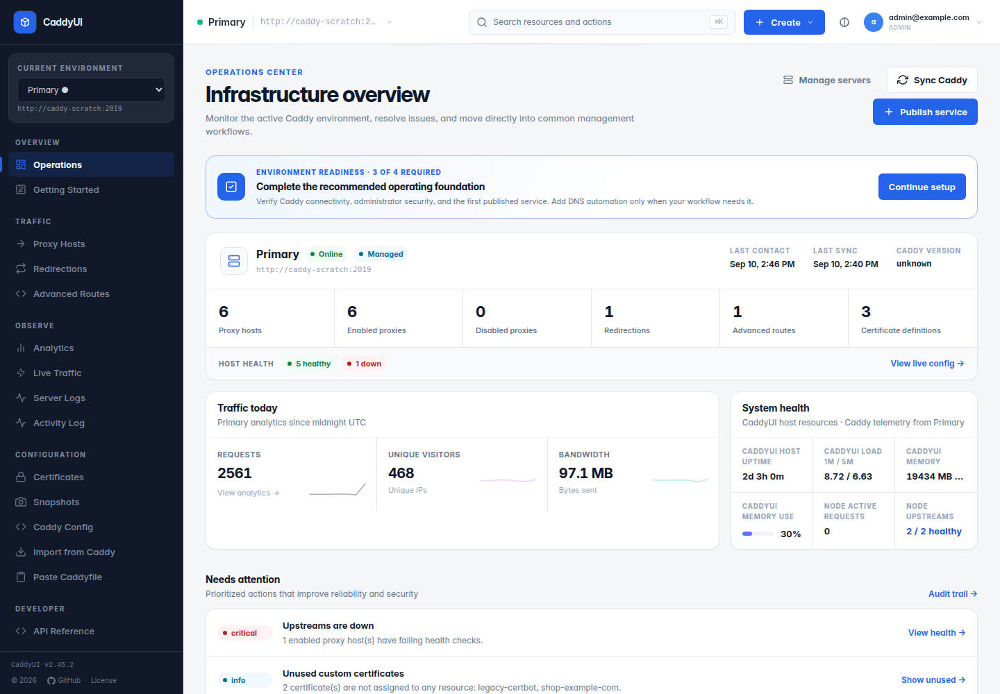
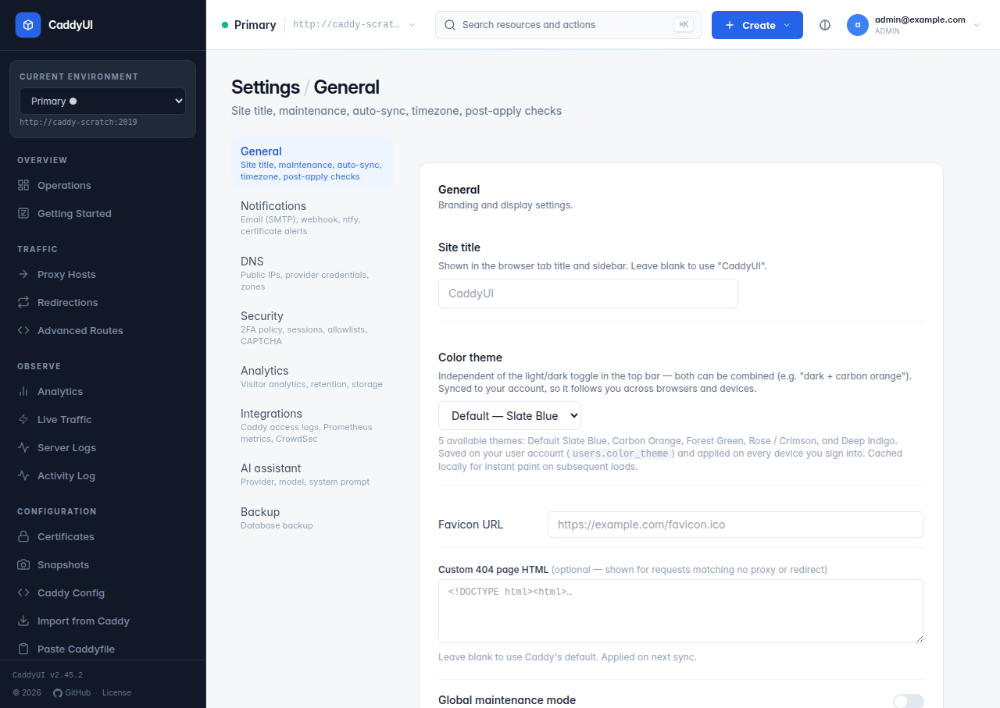

CaddyUI v2.5.0 — Switchable CAPTCHA, Timezone Picker, Branded Error Pages
Two releases shipped in a day: v2.4.12 quality-of-life fixes and v2.5.0's switchable CAPTCHA provider. Here's what landed and why.
What is CaddyUI, briefly
CaddyUI is a self-hosted web dashboard for Caddy. It stores your proxy hosts, redirects, certs, and advanced routes in SQLite and pushes JSON config to Caddy's admin API on every save. If you've used Nginx Proxy Manager, the surface area is similar — but it speaks Caddy natively instead of translating to nginx.

🚀 What's new in v2.5.0
Switchable CAPTCHA protection
A single Settings card now lets you pick one of three modes:
Off
Default on fresh installs. Fine for LAN-only deployments.
Cloudflare Turnstile
Managed, free, privacy-friendly. Invisible when possible.
Google reCAPTCHA v3
Score-based and invisible. Configurable threshold (0.0 bot → 1.0 human).
The challenge applies to three forms: /login, /login/totp, and /users/new
(admin creating a new account). Existing Turnstile keys from v2.4.x upgrade in place with zero migration —
just flip the provider to Turnstile and everything Just Works. Inactive-provider keys stay in the DB across
switches, so you can toggle between Turnstile and reCAPTCHA without re-typing credentials.
environment:
CADDYUI_CAPTCHA_DISABLE: "1"Set that, restart the container, and the widget stops rendering and the server stops verifying. Pull it back out once you've logged in. The Settings page shows an amber "overridden by env" badge whenever the kill switch is active, so you don't forget to turn it off.
Small implementation details worth mentioning
- TOTP captcha failure doesn't burn the pending-TOTP token. Wrong captcha ≠ burned 2FA slot — the 5-minute auto-expire still caps abuse.
- reCAPTCHA v3 uses a form-submit hook. First submit fetches a token via
grecaptcha.execute, populates a hidden input, then re-submits. Ifapi.jsfails to load (ad-blocker, outage), the fallback path submits anyway so the server returns a clean "Security check failed" instead of a stuck form. - Verify-endpoint HTTP client has a 10-second timeout. A slow Google/Cloudflare siteverify can't wedge
/loginfor 30+ seconds. - Unknown provider values coerce to "off". A tampered POST or hand-edited DB can't render a broken widget that would lock admins out.

🎁 Also bundled in v2.4.12 (shipped earlier the same day)
🕒 Timezone picker
Settings → Timezone now has an IANA zone dropdown
(America/New_York, Europe/London, Asia/Tokyo, …) with an "Other…"
free-text fallback. Every DB-stored timestamp in the UI flows through it: cert expiry, activity log, snapshots,
"last contact", "last sync". Resolution priority is:
- DB value (what you picked in Settings)
TZenvironment variable (Go'stime.Local, populated at startup)- UTC
There's also a new TZ: ${TZ:-UTC} env entry on both services in docker-compose.yml —
pair it with the same zone on your Caddy container so the access-log timestamps line up.
🎨 Branded error pages
CaddyUI now injects a set of routes into apps.http.servers.srv0.errors.routes so every
404/502/503/504 from Caddy itself (not from an upstream that returns its own error body) renders a
dark-mode-aware HTML page with:
- The status code and a short human-readable explanation of what probably went wrong
{http.error.id}— Caddy's 9-char correlation ID (the same one that ends up in the access log, so when a user screenshots a 502 you can grep the log)- Current HTTP-Date timestamp
{err.status_code} / {err.id}
shortcuts you see in the Caddyfile docs only work through the Caddyfile adapter. If you're pushing raw
JSON to /load (which CaddyUI does), you have to use the full {http.error.status_code}
/ {http.error.id} paths. Also, {time.now.iso8601} doesn't exist — use
{time.now.http} instead.
📦 Upgrade
docker pull applegater/caddyui:v2.5.0
# or
docker pull applegater/caddyui:latest
Multi-arch linux/amd64 + linux/arm64 (yes, your Raspberry Pi is fine), SBOM +
provenance attestations, scratch base, non-root UID 10001.
No schema migration required. CAPTCHA settings default to off on fresh installs, and existing Turnstile keys carry over exactly as they were.
💬 Feedback welcome
I'm calling v2.5.0 a natural stopping point for now — but if you run into bugs, or there's a feature you'd love to see, or something you think could work better, please let me know. The project moves when real users ask for things.
- 🐛 Open an issue on GitHub
- 💡 Feature ideas — same place, any detail helps
- 🔐 Security-specific concerns — see SECURITY.md
Especially interested in feedback on the error-page design — it's the first time I've written HTML that Caddy itself serves, and I'd rather get the conventions right early.